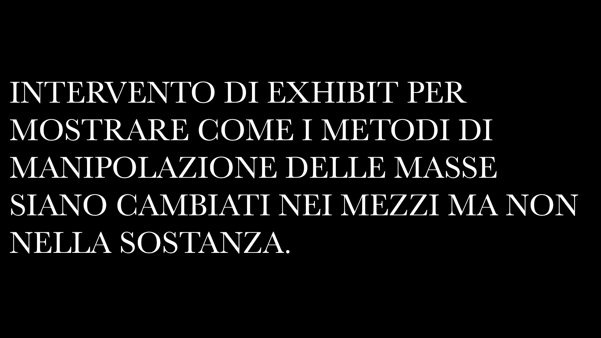
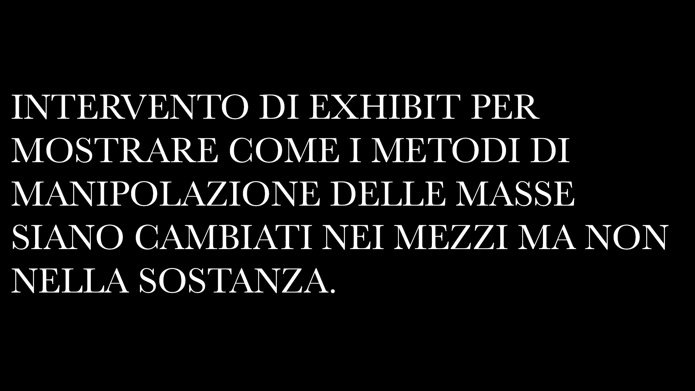

SULLE ONDE SBAGLIATE
ESPERIENZA INTERATTIVA CHE INTENDE STIMOLARE UN DIALOGO CRITICO SULL'ABBONDANZA DELLE INFORMAZIONI DIGITALI
FABIO CAPONETTO - FRANCESCO LODOVICI - AMELIA MESSINA
EXHIBIT DESIGN LAB [2024] - INTERACTION AND EXPERIENCE DESIGN
UNIVERSITÀ DEGLI STUDI DELLA REPUBBLICA DI SAN MARINO
 
